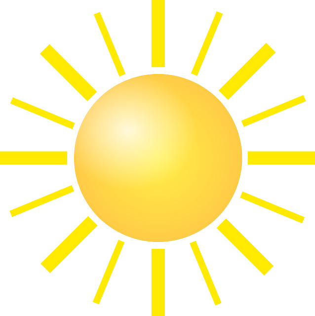
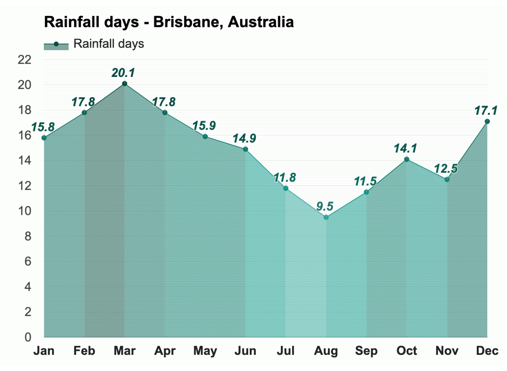

Temperature 
With an average high-temperature of 28.1°C (82.6°F) and an average
low-temperature of 22.1°C (71.8°F), January is the warmest month.
With an average high-temperature of 19.4°C (66.9°F) and an average
low-temperature of 12.7°C (54.9°F), July is the coldest month in
Brisbane.
With an average of 10.6h of sunshine, November has the most sunshine
of the year in Brisbane, Australia. The month with the least
sunshine in Brisbane, Australia, is June, with an average of 6.2h of
sunshine.
Rain
Throughout the year, there are 178.8 rainfall days, and 665mm
(26.18") of precipitation is accumulated.

February and March, with an average relative humidity of 77%, are
most humid months in Brisbane. March is the month with the most
rainfall. Rain falls for 20.1 days and accumulates 89mm (3.5") of
precipitation.
August is the least humid month in Brisbane, with an average
relative humidity of 68%. September is the month with the least
rainfall in Brisbane. Rain falls for 11.5 days and accumulates 26mm
(1.02") of precipitation.
Wind
* The above information is sourced from Weather-At. Take a
visit for
more information...
Population
2,472,000 (Metro)
Median Age 35
Ancestry
The most common ancestries in Brisbane were English 26.2%,
Australian 22.6%, Irish 8.9%, Scottish 7.4% and German 4.1%.
Country of birth
In Brisbane, 66.8% of people were born in Australia. The most
common countries of birth were New Zealand 4.8%, England 3.9%,
China (excludes SARs and Taiwan) 1.7%, India 1.7% and South Africa
1.0%.
Religion
In Brisbane, Christianity was the largest religious group reported
overall (58.4%) .
The most common responses for religion in Brisbane were No
Religion, so described 30.9%, Catholic 21.8%, Anglican 12.8%, Not
stated 9.1% and Uniting Church 4.4%.
* The above information is sourced from
Australian Bureau of Statitics. Take a visit for
more information...
Island paradise - Just moments from the city.
Queensland locals have always loved an island getaway – and why wouldn’t they? With everything from family-friendly sand islands to tiny outcrops just half a kilometre wide, the islands that sit off Brisbane’s coast are as diverse as they are beautiful.
MORETON ISLAND
BRIBIE ISLAND
K’GARI (FRASER ISLAND)
Contact with the Aboriginal culture
From powerful dance festivals to didgeridoo lessons, learn about the Aboriginal and Torres Strait Islander cultures of Queensland and check out the best Indigenous experiences in Brisbane.
SPIRITS OF THE RED SAND
BLACKCARD CULTURAL TOURS
QUANDAMOOKA COAST
MUSEUMS, GALLERIES AND THEATRES
You could easily spend the entire day in Brisbane's galleries and museums. Then, by night, immerse yourself in a world of music, performance, and storytelling in one of its many theatres. With the arts scene constantly evolving, there's always plenty to see.
QAGOMA
QUEENSLAND ART GALLERY AND GALLERY OF MODERN ART
BRISBANE POWERHOUSE
STREET ART
* The above information is sourced from
Australia.com Take a visit for
more information...